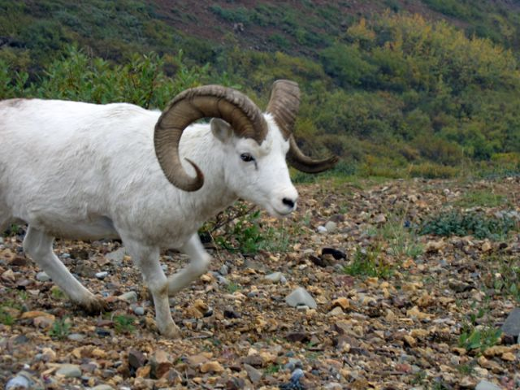

First | Previous Picture | Next Picture | Last | ------------------------------ | PICTURES HOME | BORIS HOME

Una oveja "Dall" -los cachos nunca pararan de crecer por el resto de la vida del animal.
picture_100.jpgtest